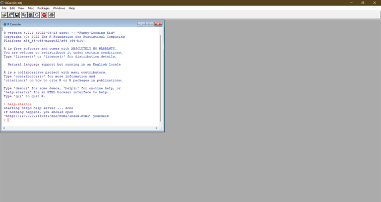

R
R: an introduction
R is a programming language with a specific focus on statistical programming. A large part of the original R programming language took inspiration from the S programming language. This is also where it also got its name (R being next to S in the alphabet), together with R being the first name of the developers (Ross Ihaka and Robet Gentleman). R first appeared in August 1993 and the first official R version 1.0 was released on the 29th of February, 2000 (Source).
Strictly speaking, when we are programming in R, we are not actually programming in R. R is only a language definition, a long set of rules and definitions explaining how R should work. When we code, we actually code in an R implementation: an implementation of the R language definition written in more abstract (read: more computer-friendly, less human-friendly) languages. The R implementation we will be using (and most people use) is written in C, Fortran, and R.
Installing R
Let’s start by installing R. R can be used on Windows, Apple, and Linux operating systems. To download R, you can go to https://cran.rstudio.com, where you can choose the download link applicable to your platform.
After R is installed, you can open it and you will see the following screen:

In Figure 1, you can see the R console, which allows you write code to subsequently yield results. However, as you might have noticed, the interface is quite limited in the information it shows you. This is why it is a good idea to install an Integrated Development Environment (also called an IDE).
Next topic
Now that we have R, let’s install the RStudio IDE.